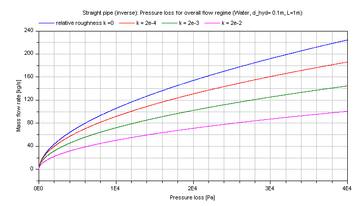

Modelica.Fluid.Dissipation.Utilities.SharedDocumentation.PressureLoss.StraightPipe
Modelica.Fluid.Dissipation.Utilities.SharedDocumentation.PressureLoss.StraightPipe
Modelica.Fluid.Dissipation.Utilities.SharedDocumentation.PressureLoss.StraightPipe
| Name | Description |
|---|---|
Modelica.Fluid.Dissipation.Utilities.SharedDocumentation.PressureLoss.StraightPipe.dp_laminarCalculation of pressure loss in a straight pipe for laminar flow regime of single-phase fluid flow only.
This function shall be used inside of the restricted limits according to the referenced literature.

The pressure loss dp for straight pipes is determined by:
dp = lambda_FRI * (L/d_hyd) * (rho/2) * velocity^2
with
| lambda_FRI | as Darcy friction factor [-]. |
| L | as length of straight pipe [m], |
| d_hyd | as hydraulic diameter of straight pipe [m], |
| rho | as density of fluid [kg/m3], |
| velocity | as mean velocity [m/s]. |
The darcy friction factor lambda_FRI of straight pipes for the laminar flow regime is calculated by Hagen-Poiseuilles law according to [Idelchik 2006, p. 77, eq. 2-3] as follows:
lambda_FRI = 64/Re
with
| lambda_FRI | as darcy friction factor [-], |
| Re | as Reynolds number [-]. |
The darcy friction factor lambda_FRI in the laminar regime is independent of the surface roughness K as long as the relative roughness k = surface rouhgness/hydraulic diameter is smaller than 0.007. A higher relative roughness k than 0.007 leads to an earlier leaving of the laminar regime to the transition regime at some value of Reynolds number Re_lam_leave . This earlier leaving is not modelled here because only laminar fluid flow is considered.
The darcy friction factor lambda_FRI in dependence of Reynolds number is shown in the figure below.

The pressure loss dp for the laminar regime in dependence of the mass flow rate of water is shown in the figure below.

Note that this pressure loss function shall not be used for the modelling outside of the laminar flow regime at Re > 2000 even though it could be used for that.
If the whole flow regime shall be modelled, the pressure loss function dp_overall can be used.
Extends from Modelica.Icons.Information (Icon for general information packages).
Modelica.Fluid.Dissipation.Utilities.SharedDocumentation.PressureLoss.StraightPipe.dp_overallCalculation of pressure loss in a straight pipe for laminar or turbulent flow regime of single-phase fluid flow only considering surface roughness.
dp = lambda_FRI * (L/d_hyd) * (rho/2) * velocity^2
with
| lambda_FRI | as Darcy friction factor [-], |
| L | as length of straight pipe [m], |
| d_hyd | as hydraulic diameter of straight pipe [m], |
| rho | as density of fluid [kg/m3], |
| velocity | as mean velocity [m/s]. |
The darcy friction factor lambda_FRI for straight pipes is calculated depending on the fluid flow regime (with corresponding Reynolds number Re) and the absolute surface roughness K .
Laminar regime is calculated for Re ≤ 2000 by the Hagen-Poiseuille law according to [Idelchik 2006, p. 77, eq. 2-3]
lambda_FRI = 64/Re
The darcy friction factor lambda_FRI in the laminar regime is independent of the surface roughness k as long as the relative roughness k is smaller than 0.007. A greater relative roughness k than 0.007 is leading to an earlier leaving of the Hagen-Poiseuille law at some value of Reynolds number Re_lam_leave . The leaving of the laminar regime in dependence of the relative roughness k is calculated according to [Samoilenko in Idelchik 2006, p. 81, sect. 2-1-21] as:
Re_lam_leave = 754*exp(if k ≤ 0.007 then 0.93 else 0.0065/k)
Transition regime is calculated for 2000 < Re ≤ 4000 by a cubic interpolation between the equations of the laminar and turbulent flow regime. Different cubic interpolation equations for the calculation of either pressure loss dp or mass flow rate m_flow results in a deviation of the darcy friction factor lambda_FRI through the transition regime. This deviation can be neglected due to the uncertainty in determination of the fluid flow in the transition regime.
Turbulent regime can be calculated for a smooth surface (Blasius law) or a rough surface (Colebrook-White law):
Smooth surface (roughness =1) w.r.t. Blasius law in the turbulent regime according to [Idelchik 2006, p. 77, sec. 15]:
lambda_FRI = 0.3164*Re^(-0.25)
with
| lambda_FRI | as Darcy friction factor [-]. |
| Re | as Reynolds number [-]. |
Note that the Darcy friction factor lambda_FRI for smooth straight pipes in the turbulent regime is independent of the surface roughness K .
Rough surface (roughness =2) w.r.t. Colebrook-White law in the turbulent regime according to [Miller 1984, p. 191, eq. 8.4]:
lambda_FRI = 0.25/{lg[k/(3.7*d_hyd) + 5.74/(Re)^0.9]}^2
with
| d_hyd | as hydraulic diameter [-], |
| k= K/d_hyd | as relative roughness [-], |
| K | as roughness (average height of surface asperities [m], |
| lambda_FRI | as Darcy friction factor [-], |
| Re | as Reynolds number [-]. |
The Darcy friction factor lambda_FRI in dependence of Reynolds number for different values of relative roughness k is shown in the figure below.

The pressure loss dp for the turbulent regime in dependence of the mass flow rate of water is shown in the figure below.

And the mass flow rate m_flow for the turbulent regime in dependence of the pressure loss of water is shown in the figure below.
Extends from Modelica.Icons.Information (Icon for general information packages).
Modelica.Fluid.Dissipation.Utilities.SharedDocumentation.PressureLoss.StraightPipe.dp_turbulentCalculation of pressure loss in a straight pipe for turbulent flow regime of single-phase fluid flow only considering surface roughness.
This function shall be used within the restricted limits according to the referenced literature.
The pressure loss dp for straight pipes is determined by:
dp = lambda_FRI * (L/d_hyd) * (rho/2) * velocity^2
with
| lambda_FRI | as Darcy friction factor [-]. |
| L | as length of straight pipe [m], |
| d_hyd | as hydraulic diameter of straight pipe [m], |
| rho | as density of fluid [kg/m3], |
| velocity | as mean velocity [m/s]. |
The Darcy friction factor lambda_FRI for a straight pipe in the turbulent regime can be calculated for a smooth surface (Blasius law) or a rough surface (Colebrook-White law).
Smooth surface (roughness =1) w.r.t. Blasius law in the turbulent regime according to [Idelchik 2006, p. 77, sec. 15]:
lambda_FRI = 0.3164*Re^(-0.25)
with
| lambda_FRI | as Darcy friction factor [-]. |
| Re | as Reynolds number [-]. |
Note that the Darcy friction factor lambda_FRI for smooth straight pipes in the turbulent regime is independent of the surface roughness K .
Rough surface (roughness =2) w.r.t. Colebrook-White law in the turbulent regime according to [Miller 1984, p. 191, eq. 8.4]:
lambda_FRI = 0.25/{lg[k/(3.7*d_hyd) + 5.74/(Re)^0.9]}^2
with
| d_hyd | as hydraulic diameter [-], |
| k= K/d_hyd | as relative roughness [-], |
| K | as roughness (average height of surface asperities [m]. |
| lambda_FRI | as Darcy friction factor [-], |
| Re | as Reynolds number [-]. |
The Darcy friction factor lambda_FRI in dependence of Reynolds number for different values of relative roughness k is shown in the figure below.

Note that this pressure loss function shall not be used for the modelling outside of the turbulent flow regime at Re < 4e3 even though it could be used for that.
If the overall flow regime shall be modelled, the pressure loss function dp_overall can be used.
Extends from Modelica.Icons.Information (Icon for general information packages).
Modelica.Fluid.Dissipation.Utilities.SharedDocumentation.PressureLoss.StraightPipe.dp_twoPhaseOverallCalculation of pressure loss for two phase flow in a horizontal or vertical straight pipe for an overall flow regime considering frictional, momentum and geodetic pressure loss.
This function shall be used within the restricted limits according to the referenced literature.
The two phase pressure loss dp_2ph of straight pipes is determined by:
dp_2ph = dp_fri + dp_mom + dp_geo
with
| dp_fri | as frictional pressure loss [Pa], |
| dp_mom | as momentum pressure loss [Pa], |
| dp_geo | as geodetic pressure loss [Pa]. |
Definition of quality for two phase flow:
Different definitions of the quality exist for two phase flow. Static quality, mass flow rate quality and thermodynamic quality can be used to describe the fraction of gas and liquid in two phase flow. Here the mass flow rate quality (x_flow) is used to describe two phase flow as follows:
x_flow = mdot_g/(mdot_g+mdot_l)
with
| x_flow | as mass flow rate quality [-], |
| mdot_g | as gaseous mass flow rate [kg/s], |
| mdot_l | as liquid mass flow rate [kg/s]. |
Note that mass flow rate quality (x_flow) is only equal to the static quality, if a difference between the velocity of gas and liquid phase is neglected (homogeneous approach). Additionally the thermodynamic quality is only equal to the mass flow rate quality (x_flow) in the two phase regime for thermodynamic equilibrium of the phases.
Frictional pressure loss:
The frictional pressure loss dp_fri of a straight pipe is calculated either by the correlation of Friedel (frictionalPressureLoss==Friedel) or by the correlation of Chisholm (frictionalPressureLoss==Chisholm). Both correlations can be used for the above named two phase flow regimes. The two phase frictional pressure loss results from a frictional pressure loss assuming one phase liquid fluid flow and a two phase multiplier taking into account the effects of two phase flow:
dp_fri = dp_1ph*phi_i
with
| dp_1ph | as frictional pressure loss assuming one phase liquid fluid flow [Pa], |
| phi_i | as two phase multiplier [-]. |
The liquid frictional pressure loss is calculated with the total mass flow rate assumed to flow as liquid.
The correlations of Friedel and Chisholm differ in their calculation of the two phase multiplier:
phi_friedel = (1 - x_flow)^2 + x_flow^2*(rho_l/rho_g)*(lambda_g/lambda_l)
+ 3.43*x_flow^0.685*(1 - x_flow)^0.24*(rho_l/rho_g)^0.8*(eta_g/eta_l)^0.22*(1 - eta_g/eta_l)^0.89*(1/Fr_l^(0.048))*(1/We_l^(0.0334))
phi_chisholm = 1 + (gamma^2 - 1)*(B*x_flow^((2 - n_exp)/2)*(1 - x_flow)^((2 -n_exp)/2) + x_flow^(2 - n_exp))
with
| B | as Lockhart-Martinelli coefficient [-], |
| eta_l | as dynamic viscosity of the liquid phase [Pas], |
| eta_g | as dynamic viscosity of the gaseous phase [Pas], |
| gamma | as physical property coefficient [-], |
| n_exp =0.2 | as exponent in Chisholm correlation [-], |
| phi_i | as two phase multiplier [-], |
| rho_l | as density of the liquid phase [kg/m3], |
| rho_g | as density of the gaseous phase [kg/m3], |
| Re_l | as Reynolds number of the liquid phase [-], |
| Re_g | as Reynolds number of the gaseous phase [-], |
| Fr_l | as Froude number of the liquid phase [-], |
| We_l | as Weber number of the liquid phase [-], |
| x_flow | as mass flow rate quality [-]. |
Note that the (mean constant) mass flow rate quality (x_flow) used for frictional pressure loss is calculated as arithmetic mean value out of the mass flow rate quality at the end and at the start of the straight pipe length.
Momentum pressure loss:
The momentum pressure loss dp_mom can be considered (momentumPressureLoss = true) for a homogeneous or heterogeneous two phase flow depending on the approach used for the void fraction (epsilon). At evaporation the liquid phase having a slow velocity has to be accelerated to the higher velocity of the gas. The difference in static pressure at the outlet and the inlet causes a positive momentum pressure loss at evaporation (assumed vice versa for condensation). The momentum pressure loss occurs for a changing mass flow rate quality due to condensation or evaporation according to [VDI 2006, p.Lba 4, eq. 22] :
dp_mom = mdot_A^2*[[((1-x_flow)^2/(rho_l*(1-epsilon)) + x_flow^2/(rho_g*epsilon))]_out - [((1-x_flow)^2/(rho_l*(1-epsilon)) + x_flow^2/(rho_g*epsilon))]_in]
with
| mdot_A | as total mass flow rate density [kg/(m2s)], |
| epsilon | as void fraction [-], |
| rho_l | as density of the liquid phase [kg/m3], |
| rho_g | as density of the gaseous phase [kg/m3], |
| x_flow | as mass flow rate quality [-]. |
Note that a momentum pressure loss is only considered for a variable mass flow rate quality (x_flow) during evaporation or condensation. Momentum pressure loss does not occur under adiabatic conditions for a corresponding constant mass flow rate quality (evaporation due to pressure loss is not considered).
Void fraction approach:
The void fraction is one of the most important parameter used to characterise two phase flow. There are several analytical and empirical approaches according to [Thome, J.R] :
These approaches for the void fraction epsilon imply a correlation for the slip ratio. The slip ratio is defined as ratio of the velocity from the gaseous phase to the liquid phase at two phase flow. The effects of different fluid flow velocities of the phases on two phase pressure loss can be considered with the slip ratio in the heterogeneous approaches. The slip ratio for the homogeneous approach is unity, so that there is no difference in the velocities of the two phases (e.g., usable for bubble flow).
Geodetic pressure loss:
The geodetic pressure loss dp_geo can be considered (geodeticPressureLoss=true) for two phase flow according to [VDI 2006, p.Lbb 1, eq. 4] :
dp_geo = (epsilon*rho_g +(1-epsilon)*rho_l)*g*L*sin(phi)
with
| epsilon | as void fraction [-], |
| rho_l | as density of the liquid phase [kg/m3], |
| rho_g | as density of the gaseous phase [kg/m3], |
| g | as acceleration of gravity [m/s2], |
| L | as length of straight pipe [m], |
| phi | as angle to horizontal [rad]. |
The two phase pressure loss for a horizontal pipe calculated by the correlation of Friedel neglecting momentum and geodetic pressure loss is shown in the figure below.

The two phase pressure loss for a horizontal pipe calculated by the correlation of Chisholm neglecting momentum and geodetic pressure loss is shown in the figure below.

Extends from Modelica.Icons.Information (Icon for general information packages).